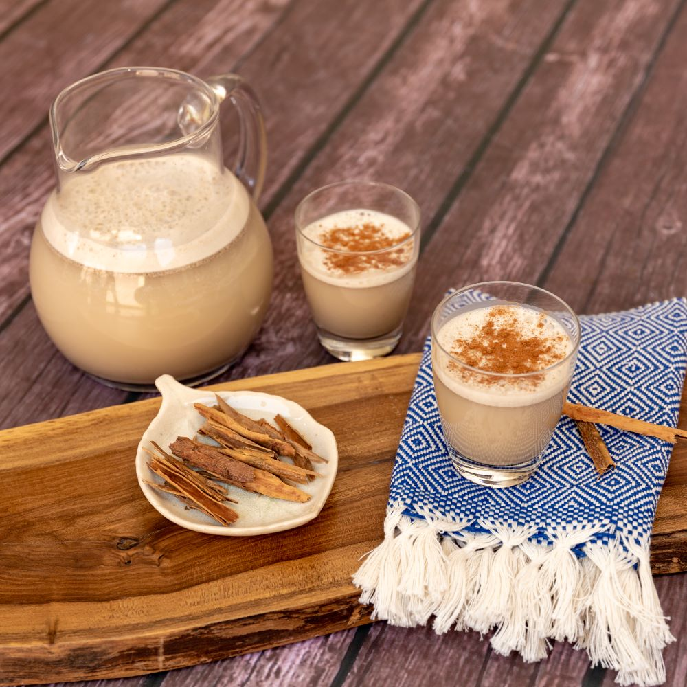

Horchata

The best drink in existence.
Horchata is a delicious and refreshing drink made from plant milk.
Popular in both central and south america, it is the perfect drink for all occasions.
Ingredients
-
For the horchata powder
- 1 lb morro seeds
- 1/4 cup white rice
- 3/4 cup golden sesame seeds
- 1 cup squash seeds
- 3/4 cup cocoa beans
- 4 tablespoons cinnamon powder
- 2 whole nutmeg
- 6 tablespoons coriander seeds
- 5 whole allspice berries
- For the fresh horchata
- Sugar
- A few drops of vanilla extract
Instructions
-
Make horchata powder
- Roast all the ingredients separately, taking care
not to burn the rice.
- The roasting time is different from one ingredient
to another and can be done in an oven, in a pan or
on a hot griddle.
- Mix all the ingredients together in a food processor
until obtaining a fine powder.
- It is important to mix them dry (without adding water),
as the powder for the horchata can be kept to prepare the
drink later and it will last longer, because all the
ingredients will maintain their natural moisture.
- It is also recommended to keep the ground mixture in
an airtight container which will keep the aroma longer.
-
Drink
- Add very cold water or very cold whole milk to the previously
prepared powder.
- Add 1 tablespoon for ½ cup 9250 ml) of liquid (water or milk).
- Add the natural vanilla extract (optional).
- Stir for 1 minute.
- Filter the preparation through a cheesecloth.
- Sweeten according to taste.
Return to top
Return to main page